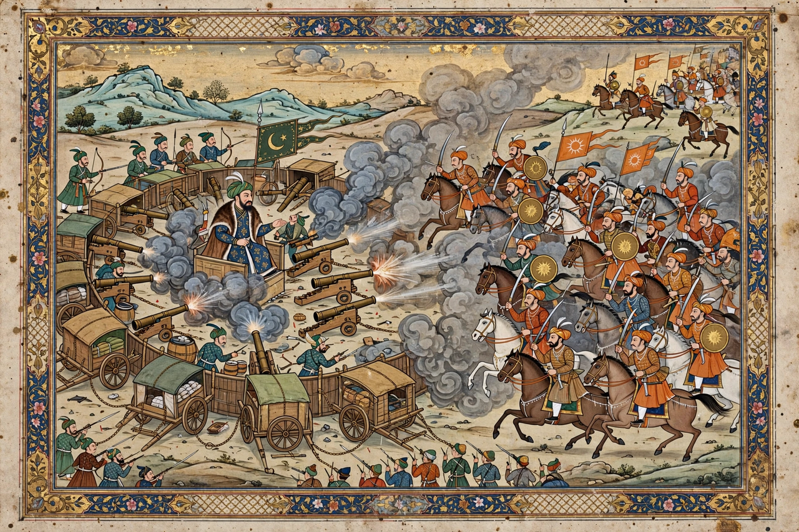

| Battle of Khanwa | |
|---|---|
 | |
| Date | 16 March 1527 |
| Location | Khanwa, near Agra (present-day Uttar Pradesh, India) |
| Result | Decisive Mughal victory |
| Belligerents | Timurid (Mughal) forces of Babur vs. Rajput confederacy of Mewar |
| Commanders | Babur vs. Rana Sanga; Hasan Khan Mewati † |
The Battle of Khanwa was fought near the village of Khanwa, west of Agra, on 16 March 1527, between the invading Timurid forces of Babur and the Rajput confederacy led by Rana Sanga of Mewar. It was the second great battle of Babur's conquest of India, after Panipat, and the more hard-fought of the two.
Having destroyed Ibrahim Lodi at Panipat in 1526, Babur faced the more formidable power of Rana Sanga, who had expected Babur to plunder Delhi and retire, and now advanced with a vast confederacy of Rajput rajas and Afghan allies. Babur's troops, demoralised by the Indian heat and the enemy's numbers, were steadied when Babur renounced wine, smashed his drinking vessels, and framed the campaign as a jihad.
Babur repeated his Panipat dispositions: carts lashed into a laager, matchlockmen and field guns under Ustad Ali Quli in the centre, and mounted archers on the wings to execute the tulughma envelopment. The Rajputs charged repeatedly and nearly broke the Mughal left, but artillery fire killed the Afghan commander Hasan Khan Mewati, and sustained volleys broke the assaults. By evening the confederacy was routed.
Babur assumed the title Ghazi and raised a tower of enemy skulls, in the steppe tradition. Khanwa destroyed the Rajput bid for supremacy in northern India and secured the Mughal Empire that Akbar would later consolidate.